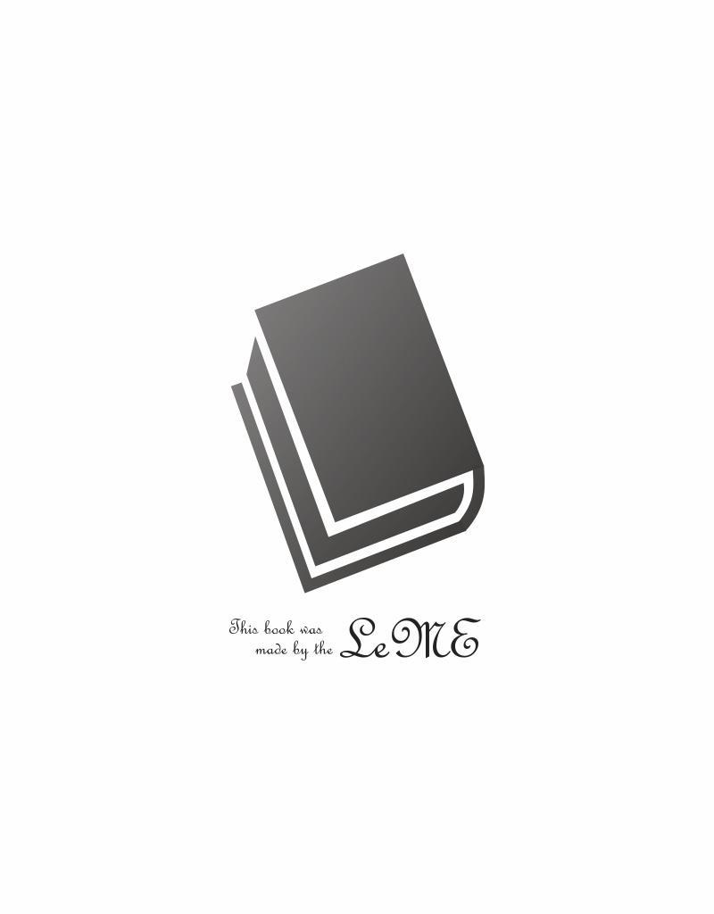

| The Gettysburg Address を読み解く | |
| 小林 宏 | |
| hi.yo (2019) | |
1. brought forth on this continent a new nation = the Declaration of Independence (Jul. 4, 1776.).
2. (which had been=in the prenatal stage) conceived in Liberty=the Association (Oct. 20, 1774.).
3. liberty / Liberty
liberty in Britain : liberty = right (権利) + freedom (reflective
freedom (反射的freedom)). cf. the following "8. freedom".
liberty in America : liberty = government (運営制度)を形成・維持
するright (権利) + freedom in a colony.
Liberty by Lincoln : the proper noun (固有名詞) for the 1 2 (後に13) colonies, which signed in the Association (Oct. 20, 1774.); "awakened (覚醒した) colonies."
4. (which had been=in the prenatal stage) dedicated to the proposition=a previous statement for the
Declaration (Jul. 4, 1776.).
5. proposition that all men are created equal.
6. It (第9,10文) = what I want to say.
7. resolve that...shall...--- that...shall...--- and that...shall...
8. freedom
libertyに包含されたfreedom = reflective freedom (反射的freedom).
libertyとは無縁のfreedom = natural freedom (本来的freedom).
freedom = s ufficiency (充足感)というmental state (心理状態) =as follows: feeling, or condition or
state.
subjective viewpoint (主観的視点)からの観察・・comfortable, pleasant, happyといった
雰囲気に通底するfeeling (感情).
objective viewpoint (客観的視点)からの観察・・ uncontrolled, unregulated, exemption,
releaseといった状況に通底する
condition or state (状態).
9. government (運営制度) of the people, by the people, for the people,
= the essence of the Constitution of the U.S.A. (preamble, Art. I, and Art. II. and III.)
= the U.S.A.
shall not perish from the earth.
1. 本稿では次の文献をその略称で示しています。
the Gettysburg Address (Nov. 19, 1863.)1 ...略称the Address.
the Constitution of the United States of America (Sept. 17, 1787. )2 ...略称the Constitution.
the Declaration of independence (Jul. 4, 1776.)3 ...略称the Declaration.
the Oxford English Dictionary Second Edition (2001)4 ...略称OED.
2. 下線部分 に続くカッコとカッコ内は下線部分 の代替語または説明です。
例えば"a camel"の話をするとして、その話への聴衆の関心を高めるために、"a camel" とはいわずに"a ship on the desert"ということがありうる。そこでは"a camel" が単に１つの生物体であることに止まらず、重要な輸送機関であることが暗黙の内に語られる。また聴衆は"a ship on the desert"から"a camel"を推測するという緊張感を深めることとなる。ここに"a camel" を "a ship on the desert"といい換えることの意義が認められる。
the Addressでは "the camel" を"the ship on the desert" と表現することが随所にある。冒頭を飾る"Four score and seven years ago" も"the ship on the desert" であって、"the camel" は"87 years ago"、即ち "in 1776"である。87年前、1776年にthe Declarationが発せられた。the Addressは続いて"our fathers brought forth on this continent, a new nation," というが "our mothers"の明示はない。"our mothers"は明示なき"the ship on the desert"である。また、the Declarationは "the British crown" 或いは"the state of Great Britain"を意識して、"these united Colonies are, and of right ought to be, Free and Independent States" とするものの、"a nation"ということばを1度も使っていない。つまり "a new nation" は "the ship on the desert" であって、その際の "the camel" は"united Colonies" 或いは "Free and Independent States"なのである。the Addressは"a new nation" に続けて "conceived in Liberty"とするのであるが、この際の "Liberty"とは "a new nation"が誕生する前の段階に於いて「独立への決意を内に固めた12 (のちに13) colonies」のこと、実体としてはそのcoloniesに在住のpeopleのこと、であって、詳細はのちに譲るものの、固有名詞である。"conceived in Liberty" は誕生前のことであるから、"our fathers brought forth" を基準にすると、"(which had been) conceived in Liberty"である。そこで "conceived " なる"the ship of the desert" に対応する "the camel"とは，「反抗、独立の決意を内に固めた12 coloniesがOct. 20,1774.に行ったthe Associationの調印」をいうことになる。続く "dedicated to the proposition"もまた誕生前のことであるから、"(which had been) dedicated to the proposition" である。この "the proposition"に続く名詞節、"that all men are created equal"はthe Declarationの第2文に既に出ている。この名詞節もいわば"the ship of the desert"であって、the Declarationとthe Address とのそれぞれの場所で担うべき意義としての"the camel"の解明が必要である。最後尾の" government of the people, by the people, for the people, "、いわゆる「3連句」もまた"the ship of the desert"であるのだが、 この3連句が代位する本命たる"the camel"への関心が乏しい。この際のgovernmentは通例、政治、統治、政府、などと和訳されてきているのだが、これらの和訳例は3連句の中にあるということに限れば、何とか意味が通ずるかのような雰囲気の漂うこともある。しかし、3連句がthe Addressのなかの1部であることに思いを致すとき、それらの和訳例ではgovernmentに即応しえないことに気付く。
かように従来の和訳の関心は，並べて"the ship of the desert"に注がれるのみで、実体たる"the camel" にまでは至らない。その顕著な例は既に触れた"Liberty (Bliss Copy)"である。数多の和訳がこれを「自由」とか「自由の精神」などとして、何とか和訳の世界の中で辻褄を合わせようと模索する。しかし"liberty"の真髄が本来「r ight (権利)」にあるにも係らず、これを単に「自由」などとしていたのでは"liberty"の意義を闇に放置しておくのみならず、"freedom"との差異を無視してしまうことにもなる。試みに"Liberty"と"freedom"との関係を「桜井(1912)」5 、「高木・斉藤(1957)」6 、「土田(2009)」7 、の3説にみると、「自由の懐」と「自由」、「自由の精神」と「自由」、「自由」と「自由」とするのみで、"Liberty"と"freedom"とが夫々に示す具体的な事象たる"a camel"には全く関心がない。これではthe Addressの描く実像に迫ることはできまい。そこでこの「はじめに 」を終え次第、the Addressを読み解くことを、"liberty vs. freedom"の検討から始めることとしたい。
Lincoln直筆の the Gettysburg Addressは、或る時期の原本所有者の名を冠して、(a) Nicolay Copy, (b) Hay Copy, (c) Everett Copy, (d) Bancroft Copy, (e) Bliss Copy,と通称される5種類の Copyが知られている8,9 。本稿はBliss Copyを基本とし、若干の文法的解明を付記した同Copyを10. に、また原文の構造的な理解を主眼とした私訳を1 1. に掲げているので、適宜のご参照をお願いしたい。何れのCopyも10個の文から成っていて文章としては概ね同じなのだが、全く同じCopyはない。Copies間の主な相違を指摘すると、(a) のみが "liberty"で、(e) Bliss Copyを含む他の 4 Copiesは"Liberty"であり、(a) (b)では第10文の "(I) that" と"(II) that"の各前に"---"を、resolveの後に来る "(ii) that"と "and (iii) that"の各前に" ; "を置く(但し(a) について "and (iii) that" の前が" ; "であるかは鮮明ではないが少なくとも"---" ではない) のに対して、他の3 Copiesでは" ; "を使うことなく、全てに"---"を使い、"under God"は (a) (b) にはなく、他の3 Copiesにはある。最後に書かれた (e) Bliss Copyにのみ"Address delivered at the dedication of the Cemetery at Gettysburg."という表題が付き、第10文の終りの2行下右寄りに自署、その1行下左寄りに"November 19, 1863."とあることから、彼地ではこれがLincoln自身の確定版であろうとみる向きが多い。従ってthe Addressというと(e) Bliss Copyを採用する例が多いのだが、しかし、Lincolnの演説集で別のCopyを採用する例もあり、アメリカ史のテキストなどでも複数のCopyから摘まんできたり、と様々である。かように彼地では総じてCopyの別への関心は薄い。このことはshall (第10文)の理解に関して、" ; " と "---" とで意味に差のないこと、従って(b) Hay Copyの中にある " ; " に対する着目が欠かせないことを示唆する。ここでCopiesに関係したepisodeを1つ:--- CBS NewsはNov. 19, 2013, 5:40 PM付で、internet上に次の要旨のnewsを流した10 。即ち、the Address 150周年を記念して主催者Ken Burnsの求めに応じた多くの著名人がthe Address の朗読をしたが、その1人Obama大統領の朗読に対して一部の保守層が"under God"を外したのは彼の偏見の為だと非難した。これに対してthe White Houseの報道官が、the Civil Warの著名な研究者であるKen Burnsが大統領に(a) Nicolay Copy ("under God"を欠く）を提供した為、と説明したという。事はこれで収まったらしい。
the Battle of Gettysburgは1863年7月1日から3日までの、the Unionがthe Confederate Statesに侵犯されていた地での戦いであったが、結局the UnionがGettysburgを奪回、死守した。戦場での戦死者は敵味方夫々3000人を超える凄惨なものであったが、現地StateのPennsylvaniaでは死体の処理が喫緊の課題となった。そこで、t he Governor (知事)の主導でthe Union側の死体をGettysburgの一隅に埋葬した。その費用はthe Unionの死亡兵士の出身Statesが負担し、the Unionの出費は棺の手配に止まった11 。1863年11月19日に、名称は一定しないものの、所謂the Consecration (奉納式)がthe Governorの主催で、埋葬作業中の土地の一隅で行われた。このことを、国有墓地の開設とする向きもあるが、国有化は1869年のことである12 。11月19日という日はLincolnの都合に関係なくOrato r (追悼演説者) Edward Everettの演説準備完了の見込みで決り、Lincolnの役割はDedicatory Remarks （献納の所見）を述べるだけであった。the Unionの調整能力は未だ弱かった。
Thomas Hobbes (1588-1679)はその著、Leviathan (1651) " Chapter 21 Of the Liberty of Subjects"の冒頭で "Liberty , what. Liberty, or freedom, signifieth, properly, the absence of opposition; I mean external impediments of motion; and may be applied no less to irrational, and inanimate creatures, than to rational."「 Liberty とは何か。"Liberty, or freedom"とは正しくopposition (対立)の欠如を意味するのであって; ここでいうopposition (対立)とは運動に対する外部からの障害のことをいうのだが; そこで"Liberty, or freedom"とはr ational creatures (人間)と同様、irrational creatures (非合理的生物)やi nanimate creatures (非生物)にも適用されよう。」といって、libertyとfreedomとの差異自体には関心を向けていない13 。福沢諭吉(1835-1901)もその著、西洋事情初編(1866)、備考、政治、第一条、の末尾で「本文、自主任意、自由の字は、わがまま放蕩にて国法をも恐れずとの義にあらず。すべてその国に居り人と交わりて気兼ね遠慮なく自力だけ存分のことをなすべしとの趣意なり。英語にこれをフリードムまたはリベルチと言う。いまだ適当の訳字あらず。」といって、フリードムとリベルチとの差異自体に関心を向けていない14 。しかし、「はじめに 」で示唆したように両者は決してsynonym (同意語)の関係にあるのではない。
Libertyとfreedomとの関係についての検討を始めるに当って、先ずその方向性を示しておきたい。米国の第32代大統領Franklin D. Roosevelt (1933-1945,1882-1945)はその年頭教書(Jan. 6, 1941.)で "four essential human freedoms"に焦点を当てたが、その最初が "freedom of speech and expression in everywhere in the world."であった。第2次世界大戦の終焉に伴い、"freedom of speech"は広く人口に膾炙されるphrase (句、言葉)となったが、これとは異なる意味ながら"liberty of speech"という言葉も存在した。"freedom of speech"は「speechが普遍的に抑圧されえない」という状況を意味したが、"liberty of speech"はBritainでは「kingからgrant (承認)されたliberty ( right (権利))としての speech」を意味し、Americaでは「kingに反逆して奪取したliberty (right (権利))としてのgovernment of a colonyに包含されたspeech」を意味した。
英語の語源で知られるJoseph T. Shipleyはlibertyの項で「freeに相当するラテン語はliber であって；その名詞はlibertas (これが英語liberty の語源)であり・・[中略]・・。しかしこのliber はそもそもthe bark of a tree (樹皮)であって、・・[以下省略]」という1 5 。ここにみられるliberty、bark、freeという連鎖には「libertyなる樹皮あってこそのfree」、「libertyなる樹皮の反射に過ぎないfree」ということが萌芽として潜んでいるように思われる。さてOEDにbarkを求めるとそのv2 . 4.で "To enclose with or as with bark;"とある1 6 。この中のencloseをOEDに求めるとその1.b.に"To fence in (waste or common land) with the intention of taking it into cultivation, or of appropriating it to individual owners."とあり、またその用例として最初に1503-4年のAct 19 Hen. VII .から"Landes.. whiche..be encloyset of newe with a Pale (柵)."を引いている1 7 。UK ParliamentのインターネットはEnclosing the landの表題の下に、"In medieval times farming was based on large fields, known as open fields, in which individual yeomen or tenant farmers cultivated scattered stripes of land. From as early as the 12th century, however, agricultural land was enclosed."という1 8 。 Black's Law Dictionaryにenclosureを求めると、"2. Land surrounded by some visible obstruction;"とある1 9 。以上の観察はlibertyが、barkやencloseを通して、「他人の侵害を排除し得るterritory (管理保有する土地、管轄区域)」であることを教える。libertyはそこに内在する「侵害排除」の力によって「right (権利)」の「claim (主張)」という外向的な視点を持つ。翻ってShipleyのfreeをみると、「サンスクリット語のpriy a (dearに相当)と語源を同じくする古英語(OE) fréon (to loveに相当)が語源。friendはfréonの変化形fréond (筆者注記；d=ing)から生まれた。初期の家庭はlovedとthe slavesとで構成されていて---それ故にfreeがnot enslaved (奴隷でない)を意味するようになった。」とある20 。 libertyには「外向を実態とするright （権利）の意識」、即ち外向的視点があるのに対し、家庭を出自とするfree (dom)には「外向を実態とするright (権利)の意識」を欠き、「sufficiency (充足感)というmind state (心理状態)」たる内向的視点があるに止まる。
語源の検討に続いてsense (字義)の検討に進みたい。OEDに夫々の最初のsense (字義)を求めるとlibertyは"Exemption or release from captivity, bondage, or slavery."とし21 、freedomは"Exemption or release from slavery or imprisonment; personal liberty."とする2 2 。両者のsense (字義) は近似するが、freedomには"personal liberty"の記載があることでlibertyと異なる。ここでOEDは"freedom= personal liberty"といっているのであるが、この等式から次の2つの事柄に気付く。その1つは、personal とは「個人的」ということであるから外向的視点を前提とするright (権利)の関係が乏しく、従って"personal liberty"はpersonalという限定詞の故にlibertyに含まれるright (権利)の意味が失われ、そこで"freedom= personal liberty" は "freedom= liberty-right"、或いは "liberty= right＋freedom"のことであって、つまり「libertyの本質はright (権利)であり、対するfreedomはright (権利)行使のreflective efficiency (反射的効果)として生ずるs ufficiency (充足感)というmental state (心理状態)である」といえよう。他の1つはBlack's Law Dictionaryが " personal liberty" を "One's freedom to do as one pleases, limited only by the government's right to regulate the public health, safety, and welfare."「行政機関に帰する公衆の衛生、安全、福祉を調整する権限によってのみ規制される、任意に行動するfreedom23 」と認識していることに着目すると、この際のfreedomは「libertyの本質たるright (権利)行使とは無縁のnatural freedom (本来的freedom)のもたらす s ufficiency (充足感)というmental state (心理状態)」といえよう。そこで上述の2つの事柄から、freedomには「libertyの本質たるright (権利)の行使によって反射的に生ずるreflective freedom (反射的freedom)と、「libertyの本質たるright (権利)とは無縁のnatural freedom (本来的freedom)の2様があることがわかる。尤もこの2様のfreedomの実体的効果は「s ufficiency (充足感)というmental st a te (心理状態)」という点では共通しており、その実体的効果を具体的に探るならば、freedomの受け手の抱くsubjective viewpoint (主観的視点)からすれば「comfortable, pleasant, happyといった雰囲気に通底するfeeling (感情)」であろうし、部外の観察者の抱くobjective viewpoint (客観的視点) からすれば「uncontrolled, unregulated, exemption, releaseといった状況に通底するcondition, state (状態)」であろう。
さてlibertyとfreedomに係る以上の関係を社会生活に置いてみよう。例えばA townからB townに通ずるthe public highwayを利用する場合はfreedom単独の問題、即ち natural freedom (本来的freedom)の問題であって、libertyの問題、即ちreflective freedom (反射的freedom)の問題は生じない。他方例えばa villageから他者の保有する土地にあるprivate waysを通ってchurchやmarketに行くとなると、その他者のgrant (承認する) a right of way 、 a liberty of passing over his grounds (通行権) が必要となる。この例示に libertyとfreedomの関係がみえる2 4 。一般論に戻すならば、libertyとfreedomとは何れもgovernment (運営制度) の存在を前提とするが、libertyはその核心が right (権利) にあるのに対して、freedomはlibertyの反射に過ぎないreflective freedom (反射的freedom)か、或いはlibertyとは無縁のnatural freedom (本来的freedom) かということになる。そこでlibertyとは「extroverted viewpoint (外向的な視点)に立ったclaim (主張) の根拠たるright (権利)、即ちkingのcharter (勅許状) 、議会の制定法などに裏打ちされたmanor, domain (領地、領土)、といったpr o perty (財産) に対する一定のright (権利)」であるのに対して、freedomとは「introverted viewpoint (内向的な視点) に立った、embrace (抱擁) としての comfort (快適性)というmental state (心理状態)」であるということがみえてくる。なお、Ervin ChemerinskyはそのConstitutional Lawの中で "The most obvious and most basic aspect of liberty is freedom from physical restraint"というが2 5 、私見ではlibertyとは"freedom from p hysical restraint " (身体的抑圧を免れること)ではなく、"physical restraint"を敢然と拒否するpower (力)としてのright (権利)、或いはright (権利) に基づくclaim (主張) のことであり、他方freedomとはliberty即ちr i ght (権利)、或いはその履行の反射であるか、或いはliberty即ちright (権利)とは無縁のもとで生ずるsufficiency (充足感)というmind state (心理状態)であると考えるので、彼の説には賛同し難い。ところで、right (権利) の意識の有無という、libertyとfreedomとの原義の差異は現在にも生きていて、"What a liberty! "「なんて身勝手な!」には権利の濫用という形ではあれ、right (権利) の痕跡が窺えるのに対して、"Feel free."「どうぞお寛ぎください」にはright (権利)の雰囲気がなく、しかもそこには「sufficiency (充足感)というm ind state (心理状態)」とその状態の醸し出す内輪の和みが認められる。
libertyのsense (字義)の検討の一環として、ここではOEDのlibertyの中でright (権利) の概念を含んでいるものを取り上げたい。それは "liberty 7. Law "であって、a.、b.、c.に分かれる2 6 。最初の7. a. は "A privilege or exceptional right granted to a subject by the sovereign power; =FRANCHISE sb.2b."である。所謂、封 (領地を分ける) 建 (諸侯を建てる)である。FRANCHISE sb.2b.は、2a.が "A legal immunity or exemption from a particular burden or exaction,..."であるのに対して、"In wider sense: A privilege or exceptional right granted by the sovereign power to any person or body of persons."である。続く7. b.はまず "pl. (✝(=obsolete) rarely collective singular)"を置いた上で"Privileges, immunities, or rights enjoyed by prescription or by grant."とする。7. a.と比べるとthe sovereign powerへの近接が薄れている。この辺に出てくるprivilegeは "private+law"、いわば「立法者の特定人に対する特別のお計らいとしての法律」、所謂Authorityからのお恵みである。最後の7. c.は "✝ Hence occasionally a person's domain or property...(See also quotation 1876.)"とする。7. b.と比べるとlibertyの被授権主体に対する prescription (指示)やgrant (承認)という束縛が薄れ、延いては被授権主体が権利主体に変質していくことが窺われる。さて7. c.にはKenelm Edward Digbyの著作(1876)の中の次の1節、"When a large district comprising several manors was held by a single lord in whom was vested by grant or long usage the complete jurisdiction of the hundred, the district was called a liberty or honour ."がそのまま引用されている2 7 。この引用文に注記をするならば、hundredは"In England (and subseq. in Ireland): A subdivision of county or shire, having its own court;"であり2 8 、a liberty or honour のhonour は "A seigniory of several manors held under one baron or lord paramount."である2 9 。そこでDigbyからの引用文は結局「幾つかの荘園で構成された広大な地域が、授与又は長期間の使用によってその地域のthe complete jurisdiction (完全なる管轄権)を持ったa single lord (単一の領主) によって保有されたとき、その地域はa liberty or honour といわれた。」という。ここにlibertyの『government (運営制度)を形成・維持するr i ght (権利) + reflective freedom (反射的freedom)』を含んだ広大な地域、domain (領地)たりうることが示される。
イギリスの古文書（ラテン語）の英訳版をみると、First Charter of Stephen（1135）を表題として "I have conceded and by this my present charter confirmed to all my barons and men of England all the liberties and good laws which Henry gave and conceded to them,..."「Stephenなるkingは全てのbarons （kingから直接授けられた領地を持つ封建家臣）とmenに対してHenryなる先代のkingが賦与乃至容認したall the liberties and good lawsを既に容認しており、かつ本charterによって確認し,...」とある30 。この場合の "the liberties and good laws" は両者共にgovernment (運営制度)の維持に寄与するものであろうから、「domain (領地)の保有とこれに係るright （権利）と、これを担保する法令」であろう。またJohn's Concession of the Kingdom to the Pop (May, 1213.)を表題とするものは、その前文の次の一部を". . ; saving to us and our heirs, our rights, liberties, and royalties."「kingとその承継人に対して、kingに帰属する right, liberties, and royaltiesを取っておく。」とするが31 、この場合のlibertiesもrightsや royaltiesに比肩しうるもの、即ち「domain (領地)の保有とこれに係るrigh t s (権利)」であろう。同書にはMagna Carta (June, 1215.)も英訳で載っており、これは通常Great Charterと直訳されているが、同書はこれをGreat Charter of Libertiesとしている。Magna Cartaはkingと貴族等との間の権利義務を約定したものであるから、表題の英訳にいうLibertiesの意味は「domain (領地)の保有とこれに関連するrights (権利)」であろう。ここでは暫時Great Charterを探ることとする32 。The Charterは前文と63個の項目から成っているが、第1項の末尾で次のようにいう。"We have granted moreover to all free men of our kingdom for us and our heirs forever all the liberties written below, to be had and holden by themselves and their heirs from us and our heirs."ここでいうall the liberties written belowは応召して死亡した場合の補償(第2項)等多様であるが「domain (領地)の保有とこれに係るrights (権利)」と概括することができよう。all the liberties written belowの一部に当る第13項では "And the city of London shall have all its ancient liberties and free customs, as well by land as by water. Moreover, we will and grant that all other cities and boroughs and villages and ports shall have all their liberties and free customs."というが、そこでのlibertiesの概念は上記のものと同様であろう。そしてここに示されたliberties とfree customsとの関係は、government (運営制度)を維持する上で必要な規範の2態様の掲示であって、libertiesが「domain (領地)の保有とこれに係るrights (権利)」であるのに対して、free customsは「kingから賦役を強いられることのない諸慣習」のことであろう。なおここで使われているcustomsを「諸慣習」ではなく「関税」と解する向きあるので「関税」と解することへの反論を2点に亘って付記しておきたい。第1 点：第41項は次の通りである。"All merchants shall be safe and secure in going out from England and coming into England and in remaining and going through England, as well by land as by water, for buying and selling, free from all evil tolls, by ancient and rightful customs..."「全ての商人は、水上と同様に陸上に於いても、売買の為にEngland出入の際に、またEnglandに滞在、通過の際に、すべての邪悪なtolls (通行料)に拘束されず、昔からの正当なcustoms (慣習) に従って、無害かつ安全たるべし。」ここでは "tolls"と"customs"とが共存するのだが、"customs"を「関税」と解したのでは"tolls"の存在が宙に浮いてしまう。第2点：OEDはcustomのentry中の4.a.で "the Customs : the duties levied upon imports as a branch of the public revenue; the department of the Civil Service employed in levying these duties."とし、次いで"In this sense the OE. name was toll (Ger. zoll ) ; consuetudo (habit、小林挿入) occurs in Magna Carta, custuma in med. L. passim (随所に)." といい、Magna Cartaでは「関税」なるものは toll と称されていたことを示唆する33 。customsが関税の意味を持つのは凡そ1384年以降のことのようである3 4 。
John Rastell (1536年没)を元祖とするLES TERMES DE LA LEY はlibertyの項で "Liberty is a privilege held by grant or prescription, whereby men enjoy some benefit or favor beyond the ordinary subject. "「Libertyとは認可乃至指示によって享受されるa privilege (特権)で、その特権によって該当者は普通の家臣の分限を超えた、大層な利益や好意を享受する。」とする3 5 。このlibertyもprivilegeに属するright s (権利)であろう。
John Locke (1632-1704) はTwo Treatises of Government (1690) (Book II.)のChap. IX. Of the Ends of Political Society and Government. (§123)で人間は1人でfreeに生きることは非常に危険で「the enjoyment of the property he has (その人が持つthe propertyの享受) は非常に安定性を欠き、不確実」なので、その人はfreeではあるが恐怖と絶間ない危険に満ちたthis Conditionを脱して、「：そしてその人がSocietyを捜し出して、既にunited (統合)し或いは統合しようと思っている他の人達と共に、彼らの、私がPr o perty と総称する"Lives, Liberties and Estates"を相互にPreservation (保存)するために、これに積極的に参画しようとすることは充分頷ける。」とし、続く段落（§124）で「従って人々がCommonwealths (国々) に統合して自らをGovernmentの下に置くことの大きくかつ主な目的は彼らのProperty をPreservation (保存)することにある。」とする3 6 。ここでLockeがProperty と総称する"Lives, Liberties and Estates"は統合によって強固、活性を求める対象であるから、夫々「Livesとはindividualsの確立のこと」、「Libertiesとはindividuals の依って立つarea (地域)の存在を前提にして、隷属を拒否して生存するright (権利)、取分け『go vernment (運営制度)形成、維持のright (権利) + reflective freedom (反射的freedom)』のこと」、「Estatesは前２者を維持するための保護装置のこと」であろう。
Francis Lieberは1791年のフランス憲法冒頭にある宣言の "Art. 4. --- La liberté consiste à pouvoir faire tout ce qui ne nuit pas à autrui: [以下省略]"を「right」という言葉を用いて次のように英訳する、"The first (monarchical) French constitution of September 3, 1791, says: "Liberty consists in the right to do everything that does not injure others. Therefore, the practice of the natural rights of each man has no other limits than those which secure the other members of society in the enjoyment of the same rights. These limits can only be determined by law.""「最初のSep. 3, 1791付（君主制）フランス憲法はかように定める：「Libertyの本質は他人を害さない範囲で何事も為すというthe rightにある。従って各人のthe natural rightsの実行は、同じthe rightsを享受する社会の他の構成員を守るというlimitsしか伴わない。これらのlimitsはlawによってのみ決定され得る。」」と3 7 。「Libertyの本質はthe rightにあり」ということに注目したい (cf. 2. liberty = right + freedom)。
Blackstoneは"Common of piscary (入会漁業権) is a liberty of fishing in another man's water; as common of turbary (入会鉱業権) is a liberty of digging turf upon another's ground."という3 8 。ここにいう2つのlibertyは何れも「claim (主張)の根拠たるright (権利)」のことであるに相違ない。
大陸に渡ったcolonistsは一応king指定の地点に colonyを形成した。colonyとは、ラテン語のcolonus (farmer)を源とするように、本来「大農場」の意味で、いわば「king授権の広大な土地」としてのlibertyであった。ところがkingの側としてはcolonyの凄惨な生活、期待外の収益、地理的な隔絶などからcolonyへの期待が薄れ、その為にcolonyの側としては母国のgovernment (運営制度)を参考にしつつ各colonyが夫々独自に『government (運営制度)を形成・維持するright (権利) + reflective freedom (反射的freedom)』を、従ってこのright (権利)の行使の効果としての ref lective freedom (反射的freedom)を享受することができた。やがて各colonyの交易が安定してくると、特に18世紀の中頃以降、kingの関心が各colonyのgovernment (運営制度)への介入を深めた。各colonyはこの介入をこれまで辛酸の中で育ててきた自分達のa colonyの government (運営制度)への侵害とみて猛然と反抗した。かって「king下賜のterritory (地域)たるa colony」であったlibertyは、今や我がterritory (地域)たるa colony に築き上げたright (権利) 、即ち kingに侵されざる我が『government (運営制度)を形成・維持するright (権利)』、を備えたa colonyとしてのlibertyとなった。Britainにあった「liberty = right (権利) + freedom」は今やAmericaにあって『liberty= government (運営制度)を形成・維持するright (権利) + freedom in a colony』となった。この際のfreedomはref lective freedom (反射的freedom)である。
1765年2月6日、独眼のIrishman、Isaac Barré (1726-1802) はa memberとしてthe House of Commons の壇上にいた。彼は1759年の対仏the Battle of Quebecで被弾して右目を失いその償いでa memberとなっていた。彼は「入植の当初から殆ど援助されることのなかったcolonistsに対して、代表権を与えずにthe Stamp Act を課すのは極めて不当だ」としてその制定に反対した。その際彼はthe Stamp Actに公然と反対する"the British colonists in America"をthe "Sons of Liberty"と呼んだ3 9 。SonはOEDのsonの内、sb.1 7.b. にいう"A person regarded as the product or offspring of a certain country or place."に相当し40 、"a certain place"は、peopleが自身の「government (運営制度)を確保していた"the colony of MA."であった。彼らはその地をlibertyと称していたと推測される。the Stamp ActはBarréの熱望に反して翌3月に成立した。この年 (1765)の初夏にBoston在住のthe Loyal Nineと自称する商工業者達がthe Stamp Act適用への反対運動を起した。the Stamp Act crisisの始動である。the Loyal NineはBarré の発案した言葉、「the Sons of Liberty」即ち「彼地Libertyの連中」を「我が領土たるLibertyの有志」に転じて自身の呼称としたものと思われる41 。
MA.のgovernor (1770-4)で親王派のThomas Hutchinson (1711-80) はan English friend に宛てた親展(Jan.22,1771.)の中で "there must be "an abridgement of what are called English liberties" in America in order to keep the colonies in subjection to the mother country." 「the coloniesをthe mother countryに留め置く為には、「English libertiesの省略版」がAmericaにあるに違いない。」と書いた42 。" English liberties"とはGlorious Revolution (1688-9)に於けるkingのg overnment (運営制度)とlords & commonsのright (権利)との間の妥協、即ち"the Bill of Rights (1689)"をいう。the New England democratsはHutchinsonの考えをtheir worst enemyとみて排斥したので,彼は1774年England に亡命した。彼らは"English liberties"、いわば臣下としての"the Bill of Rights (1689)"の地位を拒否したのであった。
libertyは通例a colony、coloniesの双方を対象にするのだが、American liberty がcolonies、all the coloniesを意味することもある。反抗はa colonyとして或いはall the coloniesの横断的連携としてのUnion、即ちthe Continental Congress---the First Continental Congress (Sep.5-Oct.26,1774.)への参加はGeorgiaを除いた12 colonies、the Second Congress (May 10,1775.-) への参加は13 colonies---の設立という形でなされた。後述のthe Association (Oct.20,1774.) の調印はthe First Continental Congress の中で為された。以上の事情をBarrett Wendell次のようにいう。"At heart, after all, our pristine ideal of liberty was English. The force which made it vital sprang from our hereditary unwillingness to permit any foreign interference with the legal rights--- the liberties, in the old English sense of the term ----which we had unwittingly developed for ourselves."「本当のところ、結局、libertyという我々の真新しい理想はEnglish (英国のもの)であった。libertyを極めて重要なものにした力は、我々のthe legal right--- the legal rightsとは古い英語の字義に於けるthe libertiesのこと---に対するany foreign (母国たる英国のこと) からの干渉を何代にも亘って不本意ながら受入れてきたことから迸り出たものであって、我々が知らず知らずの内に開発してきたものであった。」43 と。Wendellはlibertyの本質を"the legal right"、即ち『g overnment (運営制度)を形成・維持するright (権利) + reflected freedom (反射的freedom)』であるとみる。
Lincolnよりも３年程年長のMill (1806-73) はそのOn liberty (1859)のChapter Iの初頭で「LibertyとAuthorityとの間のthe struggle (闘争)は歴史上最も顕著な特徴だ」といい、続いて "By liberty, was meant protection against the tyranny of the political rulers."「libertyという言葉は the political rulersのthe tyranny に抗うprotection (防衛)を意味した」という4 4 。Millのこの認識はlibertyとは「土地とそれに内在するright (権利)のこと」の他に、「Authorityに抗うこと」の付加を示唆する。
以下ではthe Constitution制定時のF e deralists (Favoring the establishment of a strong federal, i.e. central government)4 5 とAnti-Federalistsとの軋轢に係る意見について触れたい。Patrick Henry(1736-1799)はthe Virginia Ratifying Convention (Jun.5and7,1788.)で演説をし、その中で"Were all the States, more terrible than the mother country, to join against us, I hope Virginia could defend herself; but, Sir, the dissolution of the Union is most abhorrent to my mind: The first thing I have at heart is American liberty ; the second thing is American Union; and I hope the people of Virginia will endeavor to preserve that Union:" 「もしall the Statesが、母国よりももっと恐ろしいことになって、我々に対立して統合するようなことがあっても、私はVirginiaの人々がVirginiaを守ることを希望しますが、しかし、議長、the Unionの解消は思うに非常に嫌悪感を覚えることです：私が切望する第1のことはAmerican liberty であり、第2のことはAmerican Unionであって；そこで私はVirginiaの人々がthat Unionの維持に努力することを希望します。」4 6 ここに表明されたHenryの真意は、the Unionの解消を嫌悪すべきものといいながらも、「第1がliberty 、第2がUnion」即ち「第1がevery State (旧every colony)のevery g overnment (運営制度)、第2がUnionのcentral government (全国的運営制度)」ということにある。話がPatrick Henryに及んだ序に彼に関するそれ以前の事柄を述べておきたい。彼はthe VA. Convention (Mar.23,1775.)でVirginia内の各countyに義勇隊を組織すべしとの主張をし、最後に"Our brethren are already in the field! Why stand we here idle? What is it that gentlemen wish? What would they have? Is life so dear, or peace so sweet as to be purchased at the price of chains and slavery? Forbid it, Almighty God! I know not what course others may take; but as for me, give me liberty or give me death!"で閉じた演説をした4 7 。Henryはlifeやpeaceを手中に置くために" "chains and slavery"を受容する態度を難じているのだが、そこで"give me liberty!"を「我に自由を!」と解したのでは --- right (権利)の裏打ちのない「自由」には "chains and slavery"を拒絶する力はないのだから --- king に対する憤怒の感情のない、意味不明の発声に止まってしまう。従って"give me liberty!"は「我に『government (運営制度）を形成・維持するright (権利) + reflective freedom (反射的freedom) 』を!」であろう。なおWendellは"The liberty which Patrick Henry asserted was the national liberty of America."というが4 8 、この中の「the national liberty (nationに起因する故に1体)」は、Anti-FederalistであるHenryの「VA.を守れ!」を本旨とする言葉から推すと疑わしい。Henryは後にthe statesへの束縛とa Bill of Rightsの欠如に反対してthe Constitution創設の署名を拒み、他方the ten Amendmentsの制定に尽力した。
Henryが提起したliberty かUnionかを巡る論争はthe Constitution制定後にもあった。1828年にCongressがa high tariff (この関税法に反対した南部諸州、殊にSC.ではthe Tariff of Abominations, the tariff of spitesと蔑称した)を制定したことに伴うよく知られた挿話がある4 9 。即ちRobert Y. Hayne (of SC.) が上院で例の関税法の無効性を主張したことに反対してDaniel Webster (of MA.) がSecond Reply to Hayneとして今なお知られる演説をし (Jan. 26-27, 1830.)、その最後で、"Liberty first and Union afterward"などということは愚かなことであって、every American heartにとって大切なもの---Liberty and Union, now and forever, one and inseparable ---をあらゆる地域に広げようと説いた。また或る夕食会 (Apr. 15,1830.)で時の第７代大統領Andrew Jackson (of TN.) が乾杯の音頭を取って "Our Union: it must be preserved."と発声したのに対して、次いで乾杯の音頭を取った副大統領John C. Calhoun (of SC.)が "The Union: next to our liberty, the most dear." と発声した。Websterらにとって "Liberty and Union" は同義異語であったであろうが、Calhounにとって"our Liberty, the most dear" はUnion containing statesを凌駕した愛郷、our South Carolinaのことであったであろう。
以下ではlibertyを含むその他の文献を検討する。
① David H. Fischerは"Boston's town-born men understood that idea in terms of both individual rights of property and collective rights of self-government and the rule of law, which Samuel Adams called "the liberty of Boston," "the liberty of New England," and "the liberty of America.""という50 。引用文の意義はthe Declarationに署名したSamuel Adams (of MA.,1722-1803) が「propertyに係る各人の rights (権利)とself-government等に係る共同のrights (権利)とをthe libertyと理解していた」ことにある。
② the Association (Oct.20,1774.)の内51 、art.11.の"the enemies of American liberty"でいう"liberty"はthe Association締結の主体がthe delegates of the several coloniesであることからも"each colony"のことであろう。art.14.の"(we) will hold them (=any colony which shall violate this association) as inimical to the liberties of their country"の"as inimical to the liberties of their country"は「彼らの country (each colony)のthe liberties (『government (運営制度)を形成・維持するright (権利) + reflective freedom (反射的freedom)』)にとって有害な」である。
③ the Declaration (Jul.4,1776.)の第2文は"We hold these truths to be self- evident, that (接続詞) all men are created equal, that (接続詞) they are endowed by their Creator with certain unalienable Rights, that (関係代名詞) among these are Life, Liberty, and the Pursuit of Happiness."で始まるが、そこでは「Rightsの内の主要なものは Life、Liberty、the Pursuit of Happinessである」という。そこでいう「Rightsたる Life」とは「the peopleのindividualsとしての確立」であろうし、「RightsたるLiberty」とは「the peopleがcolonyなるterritory (地域)を基盤として『government (運営制度)を形成・維持するright (権利) + reflective freedom (反射的freedom)』を保有すること」であろうし、「Rights たるthe Pursuit of Happiness」とは「government (運営制度)の目指すべき方向性の自覚」であろう。なお、LincolnはSpecial Message to Congress (Jul.4, 1861.)の中で、独立当時に於けるthe Union のthe Statesに対する主体性を説いて、"The Union, and not themselves separately, procured their independence, and their liberty."「the States自身が夫々にではなく、the Unionがthe Statesのindependenceと, the Statesのlibertyを獲得した。」とする52 。この考えは当時主として南部にあった、かってのAnti-Federalistsに通ずる考えへの反論であった。この際の各State内の「independenceとliberty」はいわば「リンゴの表皮と果肉」にも似て、前者は「対外的表明」で、後者は『government (運営制度)を形成・維持するright (権利) + reflective freedom (反射的freedom)』であろう。ここでいうtheir liberty ( every State ' s liberty ) が2年4か月後のthe Addressで「固有名詞なるLiberty」となって現れる。
④ the Constitution（Sep.17,1787. signed）前文の"(in order to) secure the Blessings of Liberty"については3者の見解に触れたい。Joseph Story の著作(1834)は前文のこの部分を"And surely nothing, of mere earthly concern, is more worthy of the profound reflection of the wise and good, than to erect structures of Government, which shall sustain the interests of civil, political, and religious liberty, on solid foundations." 「そして確かに、堅い基礎の上にcivil, political, and religious libertyの齎す諸利益を維持することを目的とするGovernment (運営制度) の諸構造を設立すること程、賢人善人の深遠な熟考に値するものは殆どない。」とする53 。Storyは「the Constitution 即ちGovernment (運営制度)」がliberty (諸権利) の「blessings即ちthe intere s ts (諸利益)」を齎す、というのである。この際のliberty (諸権利)にはdomain (領土)の保持が当然含意されていよう。Akhil Reed Amarの著作(1994)は"For most Americans today, the Bill of R ights (筆者注記；the first ten amendments, proposed in 1789, ratified in 1791. のこと) and the Fourteenth Amendment shine as clear examples of the Blessings of Liberty---sparkling jewels in freedom's crown."とする5 4 。ここには「Libertyの好例がRightsだ」という認識ある。David Catrowはその幼児向け著作(2005)の中で"secure the blessings of liberty"を"To protect our rights and freedoms and not let anyone take them away."とする5 5 。ここでは、既述2 . の等式"liberty= right + freedom"を想起させ、従ってLibertyの本質がrightにあり、freedom はrightの反射的効果であることを合点させる。なお日本国憲法第13条の「生命、自由及び幸福追求に対する国民の権利」は英文官報(OFFICIAL GAZETTE (1946))の"Their right to life, liberty, and the pursuit of happiness"に根拠を置くとするならば、「自由」は「territory (地域) と、これに必須の『government (運営機関)を形成・維持するright (権利) + reflective freedom (反射的freedom)』」に代替されるべきだったのではなかろうか。
⑤ Thomas Jefferson (1743-1826) はその著作 "Notes on the State of Virginia (1781)" の中でしばしばlibertyを使っているのだが、ここではその1か所をみることにする5 6 。即ち"In war we have produced a Washington, whose memory will be adored while liberty shall have votaries, whose name will triumph over time, and....(Query VI. p.69.) " の中の "while liberty shall have votaries" で、「libertyが崇拝者達を抱えている間は」から推して、libertyは『g overnment (運営制度)を形成・維持するright (権利)』を備えたeach colonyのことであろう。
⑥ George Washington (1732-1799)は大統領職離任に当ってthe Farewell Address (Sep. 19, 1796.)を発したが、そこには次のか所がある。"---Hence likewise they (every part of our Country=every state) will avoid the necessity of those overgrown Military establishments, which, under any form of government, are inauspicious to liberty, and which are to be regarded as particularly hostile to Republican Liberty. In this sense it is, that your Union ought to be considered as a main prop to your liberty, and that the love of the one (your liberty) ought to endear to you the preservation of the other (Republican Liberty)."「要旨：our Countryを構成するevery stateは libertyにとって不吉でしかもRepublican Libertyに対して敵対的と見做される軍事施設の肥大化を避けるだろう。そこでit is (私が申し上げたいことは) your Unionがyour libertyにとって主要な支えであり、且つyour libertyを愛することがRepublic Libertyの保存を皆さんに好かれるようにする、ということである。」について5 7 。ここにはstate libertyと Republican Libertyとの対比があるが、後者はNational Libertyのことであろう。これまでのliberty乃至Libertyがa colonyを『government (運営制度)を形成・維持するright (権利) + reflective freedom (反射的freedom)』奪取渇望の単位とみていたことからするとa colonyに付与された『government (運営制度)を形成・維持するright (権利) + reflective freedom (反射的freedom)』への関心が薄れているように思える。革命期の時代を脱したことの帰結であろうか。
colony とlibertyとの関係は、a colonyが「一定の住民を包含した地理的範囲」であるのに対して、libertyは「a colony という地理的範囲に『government (運営制度)を形成・維持するright (権利) + reflective freedom (反射的freedom)』をkingから奪取せんとの渇望が充満していること」ということにある。なおa colonyの渇望が成就し、更にはa stateになっても、そのcolony、stateはときにlibertyといわれてきた。そこでthe AddressにいうLibertyとは、「the Declaration宣言の直前期に於ける『government (運営制度)を形成・維持するright (権利) + reflective freedom (反射的freedom)』を渇望するa colonyを単位とする13 coloniesの群体のこと」である。the Addressがその群体たるLibertyを、第10文のGodと共に、しかもこの２つの名詞に限って、頭文字を大文字にしているのは、LibertyをGodと共に固有名詞とみたためであろう。
the Addressの第1文は、一方に"our fathers"を、他方に"Liberty"という固有名詞の "our mothers"と "a new nation"という子を配したa new nationの創成史であり、その創成史はthe prenatal stage (誕生前の段階) に遡って始まる。the continentにはそれまでにnationが存在していなかったから、"new" はoldとの対比ではなくnot there before (空前)、即ち創成のことであろう。ここにある母子の関係はthe Great Seal of the United States (国章、Jun.20,1782.制定)のLatin motto, "E Pluribus Unum (Out of many, one) "5 8 が参考になる。"Out of many, one" は"Out of 13 colonies (Liberty), a new nation "といい換えできる。そこで『母なるLiberty 、即ちgovernment (運営制度)を形成・維持するright (権利) + reflective freedom (反射的freedom) をkingから奪取せんとの、reflective freedom (反射的freedom)への渇望が充満したa colony (所謂覚醒したcoloniesで、その実体はそこに在住のpeople) を単位とする13 colonies の集積体』 と、『子なるa new nation』との関係は、母なる1群と子なる1体の、いわば「1群1体の共存関係」に立つ。
nationという言葉はラテン語のnat- (= to be born)に由来するように、性向、主張、価値観はさて置き、血縁重視の同胞集団乃至その構成員を指す。この言葉は、the Declaration にもthe Constitutionにもない。the Declarationではkingが当面の敵であったから、各colonyの力点は自身の自律の達成、精々その延長線上に描かれる集積体としてのUnionに止まり、nationへの力点は乏しかった。the ConstitutionではUnion強化への議論が中心であったが、結局Anti-Federalists とFederalistsとの間の軋轢がnationを拒否した。因みにWendellは、Lincoln (1809-1865)よりも年長のSC.出身でかってのAnti-Federalistsが主張した考えに通ずるCalhoun (1782-1850)の言葉を次のように引く、"I never use the word 'Nation' in speaking of the United States," he wrote to some political correspondent; "I always use the word 'Union' or 'Confederacy.' We are not a nation, but a Union, a confederacy of equal and sovereign rights. England is a nation, Austria is a nation, Russia is a nation, but the United States are not a nation."と5 9 。Lincolnがこうした敬遠の歴史を持つnationという言葉をthe Addressで5回も使ったのは、nationにcolonyの集積体としてのUnionよりも「一層内に親密な状態たるfreedomを内包する集団」という意味を感得したからであろう。さてthe Address (Bliss Copy)で頭に大文字を用いた名詞はLibertyとGod（第10文）の2語のみである。このことは、地なるLibertyと天なるGodとを、２つの固有名詞として照応させようとする意図に基づいたものと思われる。
the Addressは時系列の描写をa nation創成の前夜たるin the prenatal stage (誕生前の) 事柄、即ち① " ( which had been) conceived in Liberty,"と② "( which had been) dedicated to the proposition that all men are created equal."に遡った時点から始める。先ず①について。"(which had been) conceived in Liberty,"とはour fathersと、Libertyなるour mothersとによって生じた、a new nationのi n the prenatal stage (誕生前の)受精卵或いは胎児がそのLibertyなる母体内に着床或いは発生したこと、母体からすればconceive (妊娠)したこと、即ちi n the prenatal stage (誕生前の) 事柄をいう。これを史実に照らすと、1765年の初夏にBostonのthe Loyal Nineと自称する商工業者達のthe Stamp Act適用への反発によって始まった所謂the Stamp Act crisisが既述4.のthe Sons of Libertyを生み、その年の暮れには殆どのcoloniesに同名のgroupsが生まれ、更に1772-3年に各colonyにCom m it tees of Correspondence (通信連絡委員会) の発生を誘発させ、この一連の騒乱の組織化としてcoloniesのtrans-continental association (横断的連携) 即ちUnion結成の機運が高まり、この高まりが既述4.にいうthe First Continental Congressの開催 (Sep.5, - Oct.26,1774.), the Associationの調印 (Oct. 20,1774.)、と進む。Richard Hildrethはこの調印を "The signature of the Association by the members of Congress may be considered as the commencement of the American Union." 「大陸会議構成員の署名はthe American Unionの 始まりと考えていい。」といい60 、Lincolnもそのthe First Inaugural Address (Mar. 4, 1861.)で "It (the Union) was formed in fact, by the Articles of the Association in 1774."といい61 、Hildrethと同旨である。Burnetも "As the Declaration of Rights (筆者注記; Oct.14, 1774.) was in an important sense a forerunner of the Declaration of Independence, so the Association stands out as an important step toward the creation of an organic union among the colonies."としてthe Associationを重視する62 。私はこれらの見解を了として、"（which had been）conceived in Liberty" 即ち「受精卵がour mothersなるLibertyに着床されたとき、或いは胎児がour mothersなるLiberty内に発生したとき」とは「the Associationの調印のとき」のこととみる。次に②について。この際のdedicatedは上記①のconceivedと同様にi n the prenatal stage (誕生前の) ことである。"(which had been) dedicated to the proposition that all men are created equal"の中の "(which had been) dedicated to the proposition"は「a new nationの誕生前夜の状態たる着床した受精卵或いは発生した胎児がa new nationとして無事に誕生した暁にはthe proposition (提案) の成就に専念するa nationであるようにとour fathersによってdedicated (祈願された、嘱望された)」ことをいう。"that all men are created equal"という名詞節はthe Declaration (Jul.4,1776.) の第2文 "We hold these truths to be self-evident:---That all men are created equal;" の中の名詞節と表見的には全く同じなのだが両者の立場は明らかに異なる。the Declarationの中の名詞節は、いわばa nation誕生後のことであって、self-evident (自明の理)との認識のもとにあり、従ってg overnments (coloniesの運営制度)の観点からすれば、"how to perform 乃至 ends (現在に於ける目標達成の方策)" の問題であるのに対して、the Addressの中の名詞節は、いわばa nationのin the prenatal stage (誕生前の)ことであって、将来のa nationたる受精卵乃至胎児に対する現在のt o dedicate (祈願、嘱望)との認識のもとにあり、従ってg overnments (coloniesの運営制度)の観点からすれば、"to wish to perform the ends (将来に於ける目標達成への願望)" の問題であった。また、the Declarationが本国に対する喫緊にして熾烈な挑戦状であったことを顧みれば、その名詞節の本意はDonald S. Lutzの説く如く、"that the American people are equal to the English people."を容れないkingへの憤懣であった63 、と解されようし、他方the Addressに於ける名詞節はLincolnの本意に思いを致すならば、the Revolutionary Warになぞらえたthe Civil Warが惹起したthe peopleの分裂に対する新たな課題たる "that all the American people are equal to each other."、即ちthe Revolutionary Warに仮託した「the Civil Warの終結とthe peopleの再結合」の提案であったと解されよう。このthe proposition (提案事項) は、第10文の「3つのことをresolve (議決する)」に結び付く。
さて、「5 . the Address 第 1 文の意義 」の項を終えるに当り、the Address第1文の理解について "Garry Wills, Lincoln at Gettysburg (1992)" に示された、私見と異なる見解に触れておきたい。
1. Willsは"No proper names (固有名詞) are used in Lincoln's Address---not even the name of the battle, or of the cemetery he is dedicated with his speech." という6 4 が、私見ではLiberty (第1文)とGod (第10文)の2文字が固有名詞である。GarryがGodを固有名詞とみないのは驚きの他はない。
2. Willsは"Mothers are not mentioned at all---only the mother, the continent that brought forth a nation."という。6 5 Willsは 「a nation を生んだのはthe continentで、これのみがthe motherに相当する」というのだが、the Declarationを齎した12 (後に13) coloniesの存在はどう考えるのか。the continentという地理的概念に過ぎないものにbrought forthという役割を負わせられるものであろうか。「LibertyがMothersだ」という発想のないのが不思議である。
3. Willsは"Lincoln has reached, already, the very heart of his Gettysburg Address, where a nation conceived in liberty (WillsはLibertyとしていない) by its dedication to the Declaration's critical proposition (human equality) must test that proposition's survivability in the real world of struggle."という6 6 が、Willsにはここでいうlibertyがcoloniesであるという発想がない。
4. Willsは"By grounding that Union in the Declaration as the founding document of a single nation, he took from his favored document both values that Webster had expressed at his end of his Reply to Hayne: "Liberty and Union, now and forever, one and inseparable!" という。6 7 ここでWillsは"both values"として "Liberty and Union"を挙げるのだが、"Liberty and Union"とは"Liberty (States' rights / authorities)"と " Union ( Federal rights / authority ) " との関係を Webster のように " one and inseparable" とみるか、 C alhoun の ように "The Union: next to our liberty, the most dear." 即ち " our liberty ( States' rights / authorities) is the most dear. " とみるか、という２者択一の問題であ る。 Willsの説明には２者が 対峙している問題だという認識がなく、従って"Liberty" が "a state / states" であり、延いては "a colony / colonies" である、ということへの認識を欠く。
5. Wills は "Rather, like Webster, he (Lincoln) was saying that America is a people addressing its great assignment as that was accepted in the Declaration. This people was "conceived" in 1776, "brought forth" as an entity whose birth was datable ("four score and seven" years back) and placeable ( "on this continent" ) , 、 something that could receive a new birth of freedom. " という。 6 8 Wills は ここで 1 776 年に "conceived" と "brought forth" が同時に生 じた と理解する のだ が 、 私見 では 「着床」、 「 d edicated （ 祈願、 嘱望）」、 「誕生 」 と、それぞれ異なった時点が 時系列 として あるとみる。 W ills が 1 776 年以前のこと、特に 1774 年の the Association の調印に触れていないのは不可解である 。
6 . Wills は "Up to the Civil War, "the United States" was invariably a plural noun: "The United States are a free government. " After Gettysburg, it became a singular: "The United States is a free government." " という。 6 9 Wills の a re から i s へ変化したという指摘は 、 a nation への変化に通じて 興味深い。
OEDは "It may refer, not to any thing or person mentioned, but to a matter expressed or implied in a statement, or occupying the attention of the speaker." 「この場合のIt は既に話題となった物/人を指すのではなく、或る陳述の中で述べられたか仄めかされた事柄、或いは話者の注意を占める事柄を指す。」という70 。 これに続く幾つかの例文の1つにShakespeareのAntonio and Cleopatra I. iii.からのものが載っている。Cleopatra からAntonioへの別れ際の愛憎絡む中での言葉である。"Sir, you and I must part, but that's not it."「閣下、2人は別れねばなりません。しかしthat (それ)はitではありません。」このit は別れ以上の、いわばwhat I want to say (私の申し上げたいこと、私の関心事)を指す。 第9文と第10文の頭にあるItもこの「関心事」であろう。Itのこうした働きは前述WashingtonのAddressの中にもみられる。
既述5 . で筆者はthe Addressの本意を、the Revolutionary Warになぞらえたthe Civil Warが惹起したthe peopleの分裂に対する新たな課題としての「the Civil Warの終結とthe peopleの再集合」の提案であったと述べた。この「提案事項」を受けて立つ行為が resolveである。一般に集会に於いて、"proposition 1." 即ち「議案 第1号」が "Resolved that..." 即ち「・・右議決する」と呼応するのがその典型である。resolveは「re (強調)・solve (溶解→得心)」であって、conflicts (相対立する事案)を種々論議した結果の、得心に基づいた議決をいう。従って、resolveを単に「決意する」と解したのでは、論議の過程を無視した、所謂decide (down・cut) やdetermine (from・set bounds / set down limits) になって、適切ではない。Lincolnは南部諸州の貴族的な社会の旧弊を念頭に置いて、第１文でその是正をthe proposition (提案事項)として掲げ、これに応じて第１0文で「this nationにfreedomを新規に組入れて南北の熾烈な対立を超えた、government (運営制度) of the people, by the people, for the people,と表現されたthe Constitutionを、その実体としてのthe U.S.A.を、堅持するぞ」とresolve (議決する)ことで、この議決への賛同をthe peopleに求めたのであろう。
resolveに続く3個のshall は "You shall be fired." が "I will fire you."であって、「話者(I)の主語(You)に対する意思」を示すように、何れも「話者の主語に対する意思」を示す。そこで3個のshallは原文（Bliss Copy）に即すと次のようになる、"resolve (i) that these dead shall not have died in vain---(ii) that this nation, under God, shall have a new birth of freedom--- and (iii) that government of the people, by the people, for the people, shall not perish from the earth."「(i)我々はこれらの死者を無駄死にさせ はし ないぞ ということ---(ii) 我々は神のもとにあるthis nationをfreedomのa new birthとさせるぞ ということ---そして(iii)我々はgovernment of the people, by the people, for the peopleをこの地上から滅亡させはしないぞ ということを得心に基づいて議決する。」そして、resolveの導く3個のthat以下の名詞節の意味は次のようになろう。(i)「死者を無駄死にさせ はし ない ぞ 」とは「the Battle of Gettysburgの成功を引継いでthe Civil War を勝抜くぞ」ということ。(ii)「this nationをfreedomのa new birthとさせるぞ 」とは「87年前に創成された現在のthis nationの中にfreedom (内に宿る和やかさ= sufficiency (充足感)というmental state (心理状態))を創成 (a new birth)させるぞ」ということ。newは第1文のそれと同様にoldとの対比ではなく、創成であろう。またthis nationとfreedom との関係は、第1文でみたLibertyとa new nationとが1群1体の共存関係であったのとは異なって、本体たるthis nationとその特性たるfreedomという、いわば1体の単存関係にある。(iii)「govern ment (運営制度) of the people, by the people, for the people, をこの地上から滅亡させはしないぞ 」とは、govern ment (運営制度) of the people, by the people, for the people,自体が後述9. の如くthe Constitutionのessence (要素)であり、その実体としてのthe U.S.A.のことであろうから、「the U.S.A.を滅亡させはしないぞ」となる。
resolveと3個のshallの夫々との間に「結び付きの関係」を認める例は彼地にみられるが71 、(b）Hay Copyでも明瞭である。即ち" ---that we here highly resolve （i）that these dead shall not have died in vain;（ii）t hat this nation shall have a new birth of freedom; and（iii）that this government of the people, by the people, for the people, shall not perish from the earth." では2か所の " ; " によってresolveが3個のshallを含む夫々の目的格節を従えることが明確に読み取れる。思うに、先のHay Copyでは「結び付きの関係」を意識して" ; "を使ったけれども、後のBliss Copyでは「結び付きの関係」が極めて明瞭なので、第10文の簡素化を求めて2か所の"--- "と2か所 " ; "とを一様に"--- "にしたのではなかろうか。
a Senator of Vermont, Bernie Sanders (1941-)は、"At the conclusion of the Gettysburg Address, Lincoln stated "that we here highly resolve that these dead shall not have died in vain...that this nation, under God, shall have a new birth of freedom...and that government of the people, by the people, for the people, shall not perish from the earth." (下線は筆者の添付,その他は原文のまゝ。"under God"があるのでHay Copyではない。) とする72 。ここにもresolveとこれに続く3個の「shallを含む名詞節を導くthat」との間に「結び付きの関係」が明確に認められる。
先ずgovern の検討から始めたい。governはギリシャ語のkybern ân (ギリシャ文字のローマ字化。その字義はsteer、船の舵を取る)から来ている。舵を取るということは行先既定の船という乗物を安全に行先に運ぶべく管理運営する権限を持つということ。管理運営の対象は船であって、危険な乗客への緊急対応など特別な場合を除いて乗客を対象とはしない。この点で人々への規制を内蔵するcontrol, regulate, rule, reignなどとは異なる。船を対象とするgovernの用法は現在にも生きていて、その目的語としてはstate、company、bank、school等が用いられ、to govern the peopleとは普通はいわない。the Declarationの前文で "the consent of the governed"が1回使われているが、この言葉はkingの「government (運営制度)」の下にあったcoloniesのthe peopleを婉曲的に表現したものであって、特殊な用法とみるべきであろう。
governmentのsense （字義）には、(1) a governing body (運営体、政府）/ (2) a governing form or system (運営形態、運営制度）/ (3) governing or to govern （運営）がある。(1) がto governに係る有機体、(2) がto governに係る形態、制度、(3) がto governの名詞化である。ところで3連句とは「この地上から滅亡させまいぞ」というresolve (得心に基づく議決)の対象であるから、先ずはthe Constitutionのことであり、またその実体としてのthe U.S.A.のことであろう。そうであれば、3連句冒頭のgovernmentの字義は上記の (2) a governing form or system (運営形態、運営制度）であろう。本稿がgovernmentに対して「government (運営制度)」という表現を用いる根拠はここにあり、従って「government (運営制度)」にはthe Constitution、更にはthe U.S.A. を頂点とする法秩序が含意されている。
3連句のgovernmentを「政治」とする例を折々目にする。しかし「政治」を英語に戻すならば、government ではなく、politicianなどからの連想もあってpoliticsとするのが普通であろう。そこで「政治」を巡ってgovernmentと politicsとの関係如何が問題になる。凡そ一定の共同作業を意図して団体を組む場合には、当事者達が参集して目的、行動範囲等を話合う。子供達の鬼ごっこでさえ、事前に隠れる範囲などを話合う。この話合いは「主張 (発議)・対立・妥協・合意 (議決)」というaction s (1連の活動)、即ちdynamic dimension (動態的局面)を構成する。「合意」は約束事、綱領、定款、といったgovernment (運営制度)として団体構成員の行動規範、即ちstable dimension (安定的局面)を構成する。stable dimension (安定的局面)を構成していたものが定期的或いは臨時的な改訂の発議というaction s (1連の活動)の開始によってdynamic dimension (動態的局面)が構成される。通例このように stable dimension (安定的局面)とdynamic dimension (動態的局面)との間には循環がある。 stable dimension (安定的局面)を構成するものがgovernment (運営制度)であり、dynamic dimension (動態的局面)を構成するものがpolitics (政治)である。stable dimension (安定的局面)を構成するgovernment (運営制度) の頂点を占めるものがthe Constitution (Amendmentsを含む)であり、これらの成立に到るまでの過程としてのdynamic dimension (動態的局面)を構成するaction s (1連の活動) がpolitics (政治)であろう。そこで3連句のgovernment (運営制度)を「政治」 と解したのでは、3連句がgovernment (運営制度) の頂点を占めるthe Constitutionのことであり、その実体としてのthe U.S.Aのことである、ということへの着目を妨げるので適切ではない。3連句のgovernmentを「統治」とすることは如何か。「統治」は、「統」が多くの繭からの糸を1つに撚ることを意味するように、1つに纏めることの意味合いを含む。しかしgovernmentは纏まったものを対象にしたことばではあれ、纏めることを意味することばではない。governmentにはpeopleを糾合するような意味を含まないのだから、そのような意味を含む「統治」はgovernmentに適さない。3連句のgovernmentを「政府」とすることは如何か。「政府」ということばは、日本国憲法前文にある「政府の行為によって再び戦争の惨禍が起ることのないやうにすることを決意し、」のように、意思主体を表す場合がある。絶対の意思主体たるpeopleは「政府」たる意思主体を左右することはあれ、それに左右されることはないのだが、3連句の中にpeopleという意思主体とgovernmentとしての「政府」たる意思主体とを同居させ、場合によっては3連句の中に意思の衝突の起りうることの想定を含ませるのは当を得ない。
g overnment (運営制度)を考える場合には、the Constitutionのpreamble （前文）を読むことが有益である。それは次の通り。 "We the People of the United States, in Order to (1)form a more perfect Union, (2)establish justice, (3)insure domestic Tranquility, (4)provide for the common defence, (5)promote the general Welfare, and (6)secure the Blessings of Liberty to ourselves and our Posterity, do ordain and establish this Constitution for the United States of America." 「我々the People of the United States of Americaは、(1)一層完全なa Unionを組織し、(2)公正な法制度を設置し（establish justiceはset up fair lawsと考えられているので73 、「正義を樹立し」は適訳とはいい難い）、(3) 国内の平安を確実にし、(4) 外的に対する共同の防衛を備え、(5) 全般的な福祉を増進させ、そして、(6) Libert y (『government (運営制度)を形成・維持するr i ght (権利) + reflective freedom (反射的freedom)』を備えた土地 (かってのcolonies)たるわが領土) という賜物を我々自身と我々の子孫に対して確保する、という事々の為に、this Constitutionをthe United States of Americaへの指示として制定し確立する。」さてthe preambleはその6項目がthe U.S.A.の安定的秩序を目指したgovernment (運営制度) だとするのだが、そのgovernment (運営制度)の目的実現はthe peopleのpolitics (政治) というaction (活動) の如何に係る。
Lincolnの演説の中にみられる3連句の萌芽として、the Civil Warの端緒、Fort Sumterへの攻撃(Apr.12,1861.)の3か月後のthe Special Message to Congress (Jul.4,1861.)の中の次の1節を挙げたい。 "It (=the distinct issue: "Immediate dissolution, or blood") presents to the whole family of man, the question, whether a constitutional republic, or a democracy―a government of the people, by the same people―can, or cannot, maintain its territorial integrity, against its own domestic foes." 「それ(＝この明確な問題：「the Unionの即刻なる解消か或いは流血か」)は全人類にa constitutional republic 或いはa democracy―即ちa government of the people, by the same people―がその国の領土的完全性を、その国自身に内在する敵に対して維持しうるか否かの問題を提起します。」74 ここでLincolnは "a constitutional republic, or a democracy"をその同格として"a government of the people, by the same people"といい換えているのだが、"republic " (thing of people)にしろ "democracy " (people's power)にしろ、何れもSieyès (1748-1836)が1789年に発刊した Que 'est - ce que le Tiers État? Tout . (第3階級とは何か？ 全てである。) にも似て「peopleが全てである」ということを表明しているのだから、"a government of the people, by the same people"の趣意もまた「peopleが全てである」にあるに相違あるまい。「peopleが全てである」とは「the peopleの傘下に全てのgo vernment (運営制度)がある」ということであるから、この場合の「全てのgo vernment (運営制度)」とはthe Constitutionのことであり、即ちその実体としてのthe U.S.A.のことであるに相違あるまい。私はLincolnのこの一節が3連句の萌芽であって、しかも3連句意義を示唆をしているとみる。
3連句自体はLincolnのみの発想ではない。近くはTheodore Parker (1810-1860)がこれをdemocracyの意味で用いている75 。しかし3連句を"shall not perish from the earth."「滅亡させはしないぞ」という、いわば「話者の意思」の対象としたとき、3連句はdemocracyという抽象的な概念を超えて、the Constitutionというgovern ment (運営制度)のessence (要素)を表したものであり、その実体としてのthe U.S.A.のこととなる。このように位置付けられる3連句について、その各句は次のように理解されよう。(1) "government of the people"は「the people が主権者である government (運営制度)」をいう。この第1句はthe Constitutionの前文、"We the people of the United States, [中略], do ordain and establish this Constitution for the United States of America."にその基礎を置く。(2) "government by the people"は「the peopleがその責任でgovernment (運営制度)を推進させること」即ち「the peopleがAll legislative Powers (Art. I.)を持ち、直接立法に関与すること」をいう。a Congress (Art. I.) はthe peopleによって選任されるthe peopleの補助機関である。第2句もthe Constitution即ちその前文やArt. I.に基礎を置く。(3) "government for the people"は行政、司法のあるべき姿に着目したものであるが、the people を"my rightful masters, the American people"と呼んだLincolnの言葉 (Mar. 4, 1861.)から推測するに7 6 、"for the people"は"not for the benefits (福利) of the people, but for the will （意思）of the people"であろうから、この際の「the will （意思）of the people」 は所謂public opinion (世論)ではなく、「the Constitution とthe Congressによるacts (制定法)」であろう。the ConstitutionはThe executive Powerをa President (Art. II.)に、The judicial Powerをone supreme Court等 (Art. III.) に与えていて, 行政、司法の両部門に対するthe peopleの直接の関与を予定していないものの、「the will （意思）of the people」としての「the Constitutionとac ts (a Law (Art. I. sec.7.)」に従った事務遂行の必要性を規定する点で第3句もまたthe Constitutionの前文やArt. II., III.に基礎を置く。3連句がthe Constitutionのessence (要素)を示したものであり、従ってthe U.S.A,を指摘したものであることの所以である。
quoted from Boritt Ibid., .253-5. カッコとカッコ内は筆者の挿入。
"Address delivered at the dedication of the Cemetery at Gettysburg.
(第1文)Four score and seven years ago our fathers brought forth on this continent, a new nation, (which had been=the matter of prenatal stage) conceived in Liberty, and (which had been=the matter of prenatal stage) dedicated to the proposition that all men are created equal.
(第2文)Now we are engaged in a great civil war, testing whether that nation, or any nation so conceived and so dedicated, can long endure. (第3文)We are met on a great battle-field of that war. (第4文)We have come to dedicate a portion of that field, as a final resting place for those who here gave their lives (in order)that that nation might live. (第5文)It is altogether fitting and proper that we should do this.
(第6文)But, in a larger sense, we can not dedicate---we can not consecrate---we can not hallow---this ground. (第7文)The brave men, living and dead, who struggled here, have consecrated it, far above our poor power to add or detract. (第8文)The world will little note, nor long remember what we say here, but it can never forget what they did here. (第9文) It is for us the living, rather, to be dedicated here to the unfinished work which they who fought here have thus far so nobly advanced. (第10文)It is rather for us to be here dedicated to the great task remaining before us--- (I) that (the great taskの同格節を導く接続詞、1/2) from these honored dead we take increased devotion to that (次のcauseを修飾する指示形容詞) cause for which they gave the last full measure of devotion---(II) that (the great taskの同格節を導く接続詞、2/2) we here highly resolve (i) that (to resolveの目的格節を導く接続詞、1/3) these dead shall not have died in vain---(ii) that (to resolveの目的格節を導く接続詞、2/3) this nation, under God, shall have a new birth of freedom---and (iii) that (to resolveの目的格節を導く接続詞、3/3) government of the people, by the people, for the people, shall not perish from the earth.
Abraham Lincoln.
November 19, 1863."
「Gettysburgに所在する墓地の献納式で述べられたthe Address。
(第1文) 87年前の1776年に、our fathersはこの大陸にa new nation ---government (運営制度)を備えた単一の同胞集団---を創成させましたが、この時点を少し遡ってみますと、そこには2つの顕著な現象がみられます。その1つは "(which had been) conceived in Liberty,"です。この場合、Libertyとは大陸に所在するcoloniesという地理的観念に加えて、『government (運営制度)を形成・維持するr i ght (権利) + reflective freedom (反射的freedom)』をkingから奪取したいという渇望が充満した a colony (所謂a n awakened colony (覚醒したcolony) )の群体をいいます。そしてこの群体がOct. 20, 1774. にthe first Continental Congressに於いてGeorgiaを除いた12 colonies が共通の意思として、the Associationに調印します。この調印が、後日 a new nationの誕生へと発展するのですから、従ってこの調印が12 (後に13) coloniesなるLibertyというour mothersへの受精卵の着床乃至胎児の発生を意味するのです。これが(which had been) conceived in Libertyの意味するところです。なお、ここでいうLibertyは第10文のGodと共に、しかもこの2文字だけが、頭文字に大文字を用いていますが、このことはLiberty とGodが共に固有名詞であることを意味します。他の１つは "(which had been) dedicated to the proposition that all men are created equal."です。ここにみられる名詞節、"that all men are created equal."はthe Declaration の第２文、"We hold these truth to be self-evident: ---That all men are created equal;"と全く同じです。しかし、両者の意味するところは全く異なります。the Declarationの中の名詞節は、self-evident (自明の理)という認識であり、従ってg overnments (coloniesの運営制度) の観点からすれば、いわば現在の問題、"how to perform the ends"の問題であるのに対して、the Addressの中の名詞節は、将来のa nationとしての受精卵乃至胎児に対する現在のto dedicate (祈願、嘱望)という認識であり、従ってg overnments (coloniesの運営制度)の観点からすれば、いわば将来の問題、"to wish to perform the ends" の問題です。また、the Declarationが本国に対する喫緊にして熾烈な挑戦状であったことを顧みますと、その名詞節の本意はDonald S. Lutzの説く如く、"that the American people are equal to the English people."を容れないkingへの憤懣であった63 、と解されましょうし、他方the Addressに於ける名詞節はLincolnの本意に思いを致すならば、the Revolutionary Warになぞらえたthe Civil Warが惹起したthe peopleの分裂に対する新たな課題たる "that all the American people are equal to each other." 、 即ちthe Revolutionary Warに仮託した「the Civil Warの終結とthe peopleの再結合」の提案であったと解されましょう。このthe proposition (提案事項) は、第10文の「3つのことをresolve (議決する) 」に結び付きます。
(第2文) さて現在、私達は大きな 市民戦争 (a great civil war)を遂行しているところであって、その戦争はthat nation (その同胞集団) が、或いはかって斯く着床されそして斯く嘱望されたany nation が、末長く耐え続けられるかどうかという試練の最中にあります。(第3文) 私達はその戦争の極めて重要であった戦場で会合しています (metは自動詞の過去分詞)。（第4文）私達はその戦場の1部を、that nation (その同胞集団) が生き続けられるようにと、ここで自分たちの生命を投出した人達の最後の安らぎの場所 (墓地)として、それらの人達に捧げる (dedicate)ために来ています。(第5文) 私達がこのようなことをすべきだ (should)ということは全く適切かつ当然のことです。
(第6文)しかし、もっと大きな意識でいえば、私達はこの戦場の地 (this ground)を---捧げる (dedicate)ことはできません---奉納する (consecrate)ことはできません---神聖にする (hallow)ことはできません。(第7文) 何故ならば、ここで戦った勇敢な人達たる生者と死者は、私達が加除しうる程度の貧弱な力を遥かにこえて、この地 (it=this ground) を完全に神聖 に して奉納 し てしまって いる (have consecrated、Gettysburgを奪取し終えている)からです。(第8文) 世界の人達 (The world)は私達が今ここでいうことを殆ど注目せず、長く記憶に留めておくこともないでしょうが、しかしその 世界の 人達 (it) は彼らがここで成したことを決して忘れるはずがありません。(第9文) こ の際 私が申し上げたいこと (It) は、それどころか (rather=死者への憧憬はさて置き)、生者たる私達が、ここで戦った彼らがこの戦場で (here)かくも遥かに堂々と歩を進めた (the Battle at Gettysburgで勝利を収めたけれども) 未完の仕事 (the Civil Warが未完であること) に対してここで専念させられるべきだ (to be dedicated)ということです。 (第10文) 重要なこと (It) は、むしろ (rather) 私達が, 彼らが最後の全力を傾注して献身 (devotion)を与えた対象であって、しかも私達の前に残っている次の 2 つの偉大な仕事 (the great task、原文の(I) &(II)) に対して、ここで専念させられるべき (to be here dedicated)だということです、即ち---the great taskの(I)としては、これらの名誉を与えられた戦死者から、私達があの目的 (that cause=the great task の目指すa more perfect Union (quoted from the preamble, the Constitution )の達成) に対する増々の献身 devotion=zeal, profound dedication) を引受ける (take、その終着はthe Civil Warに勝つ)ということであり、---the great taskの(II)としては、私達はここに次の3つのことを議決 する (resolve、第1文のproposition (提案事項) がresolve (議決する)に収斂)ということであって、即ち---(i)これらの戦死者を無駄死にはさせまいぞ、---(ii) 神の下にあるthis nation (この同胞集団)に、freedom 〖natural freedom (本来的 freedom)自体に備わったsufficiency (充足感)というmind state (心理状態)の醸し出す内なる和やかさ〗の新たな誕生を付加させるぞ(freedomはthis nationに付加されるべき特性であって、this nationと対峙するものではなく、従って両者はthis nationが包含したfreedom という1体の単存関係) 、---そして(iii) government ( 運営制度 ) o f the people, by the peopl e, f or the people , (① the peopleが主権者であり、② the people がacts (a Law (Art. I. sec.7.)) を制定することによって立法を成し、③ 行政、司法の両部門がthe peopleの意思、即ちthe constitution とacts (a Law (Art. I. sec.7.)) に従って事務を為すということをessence (要素)とする運営制度、即ちthe Constitutionのことであり、その実体たるthe U.S.A.のこと) をこの地上から絶滅させまいぞ、という3つの議決です。
Abraham Lincoln
November 19, 1863.」
1 Gabor Boritt, the Gettysburg Gospel (New York: Simon & Schuster, 2006), 253-5.
2 Henry Steele Commager, ed., Documents of American History (New York: Meredith Publishing Company, 1963), 138-49.
3 Commager, Documents , 100-3.
4 J.A. Simpson and E.S.C. Weiner, eds., The Oxford English Dictionary second edition (Oxford: Clarendon Press, 1989).
5 桜井鴎村『リンコーン物語』丁未(テイビ)出版社、1912年、342-3頁。
6 高木八尺、斉藤光 訳『リンカーン演説集』岩波文庫、1957年、148-9, 178-80頁。
7 土田宏『リンカン』彩流社、2009年、208-22頁。
8 Boritt, Gospel , 245-65.
9 小林宏『"Government of the people, by the people, for the people,"とは何か？』近代文芸社、2013年、706-14頁。
10 Stephanie Condon, White House explains why Obama didn ' t say "under God" in Gettysburg Address (CBS NEWS Nov.19, 2013), accessed November 30, 2016,
https://www.cbsnews.com/news/white-house-explains-why-obama-didnt-say-under-god-in-gettysburg-address/ .
11 小林 Government, 696-701頁。
12 Ibid.,734頁。
13 Thomas Hobbes, Leviathan (1651), (New York: Collier Books, Macmillan Publishing Company, 1962),159.
14 福沢諭吉『日本の名著33福沢諭吉』中央公論社、1969年、358頁。
1 5 Joseph T. Shipley, Dicti o nary of Word Origins (New York: Philosophical Library, 1945), 158-9.
1 6 OED, I. 958.
1 7 Ibid. , V. 212.
18 UK Parliament, Enclosing the land , accessed January 21, 2018,
https://www.parliament.uk/about/living- heritage/transformingsociety/towncountry/landscape/overview/enclosingland/ .
19 Bryan A. Garner, editor in chief., Black's Law Dictionary , Second Pocket Edition (MINN : West Group, 2001), 235.
20 Shipley, Word Origins , 158-9.
21 OED, VIII. 885.
22 Ibid., VI. 164.
23 Bryan, Black's Law Dictionary , 418.
2 4 William Blackstone, The Commentaries on the Laws of England. Vol. II. (London: John Murray, 1876), 30.
25 Erwin Chemerinky, Constitutional Law Principles and Policies (New York: Wolers Kluwer, 2011), 578.
2 6 OED, VIII. 886.
2 7 Kenelm Edward Digby, M.A., A n Introduction to The History of the Law Of Real Property (Oxford: the Clarendon Press, 1874), 52.
2 8 OED, VII. 491. hundred, 5.a.
2 9 Ibid., VII. 358. honour 7. Law .
30 George Burton Adams and H. Morse Stephens eds., Sele c t Document s of English Constitutional History (Latin text, translation) (New York: The Macmillan Company, 1902), 7.
31 Ibid., 38-9.
32 Ibid., 42-52.
33 OED, IV. 167. at the top of the third column.
3 4 寺沢芳雄編『英語語源辞典(縮刷版)』研究社、1997年、311-2頁。
3 5 John Rastell (1536年没)を元祖とするLES TERMES DE LA LEY の1708年版(Google books), 416と1812年版 (ISBN 0-8377-2575-5), 280。
3 6 John Locke, Two Tre a tises of Government (1690) (Cambridge: Cambridge United Press, 2004), 350-1.
3 7 Francis Lieber, LL. D., On Civil Liberty and Self-government , Third Edition, Revised (Philadelphia : J. B. Lippincott & Co. , 1883) , 35, accessed July 20, 2017,
http://oll.libertyfund.org/titles/lieber-on-civil-liberty-and-self-government .
3 8 Blackstone, Commentaries , 29.
3 9 Bob Ruppert, Isaac Barré : Advocate for Americans in the House of Commons (Journal of the American Revolution, 2015) , 8/21, accessed January 24, 2018, https://allthingsliberty.com/2015/08/isaac-barre-advocate-for-amerians-in-the-house-of-commons/ .
40 OED, XV. 1001.
41 The Independent Hall Association in Philadelphia (UShistory.org), The Sons of Liberty , accessed April 7, 2017, http: //www.ushi s tory.org/declaration/related/sons.html
42 John C. Miller, Origins of the American Revolution (Boston: Little, Brown and Company, 1943), 58.
43 Barrett Wendell, Liberty, Union a nd Democracy (New York: Charles Scribner's Sons, 1907), 115.
44 John Stuart Mill, On Liberty (1859) (Mineola, NY: Dover Publications, Inc., 2002), 1.
4 5 OED, V. 795 (federal 3.a.).
4 6 Ralph Ketcham ed., The Anti-Federalist Papers (NY: New American Library, 1986), 214-5.
4 7 Colonial Williamsburg, Patric k Henry's "Give Me Liberty Or Give Me Death" Speech , accessed May 15, 2017, https://www.history.org/almanack/life/politics/giveme.cfm .
4 8 Barrett Wendell, Liberty Union and Democracy , (New York: Charles Scribner's Sons, 1907), 114.
4 9 Henry F. Graff, The Story of the American People (Chicago: Rand McNally, 1967), 326-8.
50 David Hackett Fischer, Liberty and Freedom (NY: Oxford University Press, 2005), 23.
51 Commager, Documents , 83-7.
52 The Library of America, ed., Selected Speeches and Writings / Abraham Lincoln (New York: the Library of America, 1991), 310.
53 Joseph Story, LL.D., The Constitutional Class Book: being a brief exposition of the Constitution of the United States. (Boston: Hilliard, Gray & Company, 1834), 41.
54 Akhil Reed Amar, The Bill of Rights and Ou r Posterity (Yale Law School Legal Scholarship Repository1-1-1994) , accessed June 28, 2018, http://digitalcommons.law.yale.edu/cgi/viewcontent.cgi?article=1970&context=fss_papers .
5 5 David Catrow, We the Kids (Puffin Books, 2005), the 9th page from the cover.
5 6 Thomas Jefferson, N otes on the State of Virginia (1781) : Electronic Edition (University of North Carolina at Chapel Hill, 2006), accessed January 24, 2018, http://docsouth.unc.edu/southlit/jefferson/jefferson.html .
5 7 George Washington, Washington' s Farewell Address (1796) , (Bartleby.com), par. 13, accessed July 20, 2018, https://www.bartleby.com/43/24.html .
5 8 U.S. Department of States, The Great Seal of the United States, accessed April 27, 2017, https://www.state.gov/documents/organization/27807.pdf .
5 9 Barrett Wendell, Ibid., 229.
60 Richard Hildreth, The History of the United States of America vol. III. (NY: Harper & Brothers, Publishers, 1854), 46.
61 The Library, Speeches by Lincoln , 286-7.
62 Edmond Cody Burnett, The Continental Congress (New York: Norton & company, 1964), 57.
63 Donald S. Lutz, The Origins of American Constitutionalism ( LA. : LA. State Univ. Press, 1988), 78-9.
6 4 Garry Wills, Lincoln at Gettysburg (NN: Touchstone, 1992), 51.
65 Ibid., 77.
6 6 Ibid., 103.
6 7 Ibid., 144.
6 8 Ibid., 145-6.
6 9 Ibid., 145.
70 OED, VIII. 140 (B.I.1.c.).
71 小林 Government, 710-3頁。
72 Bernie Sanders, Getting Big Money Out of Politics and Restoring Democracy , accessed February 16, 2016, https:// berniesanders.com/issues/money-in-politics/ .
73 Graff, American People , 704.
74 The Library, Speeches by Lincoln , 304.
75 小林 Government, 475-535頁。
7 6 The Library, Speeches by Lincoln , 287.
了
